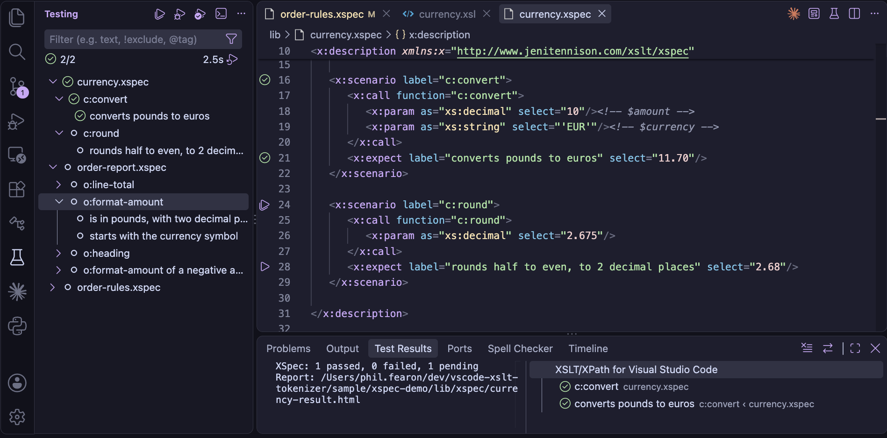
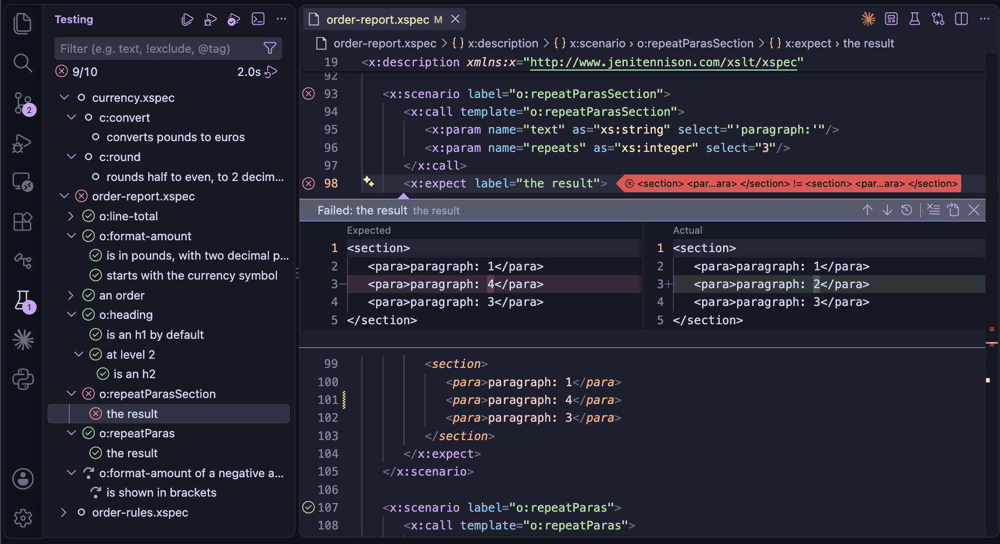
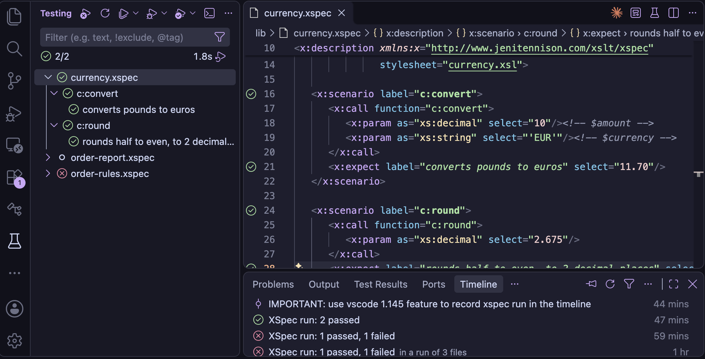
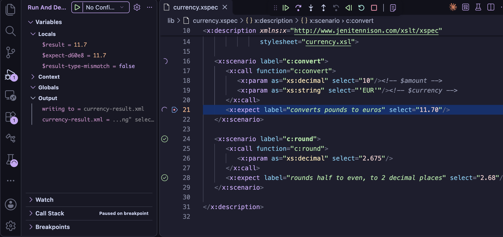
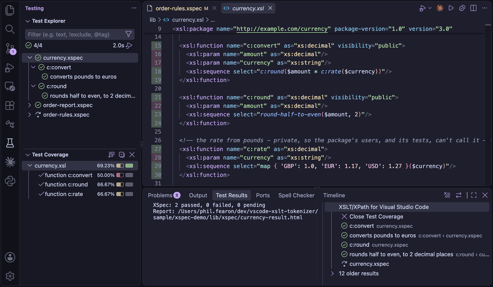

XSpec Tests

XSpec is a testing framework for XSLT and Schematron.
An XSpec file (.xspec) describes scenarios: each calls a function or a named template, or
applies template rules to a context, and its expectations say what the result should be:
<x:description xmlns:x="http://www.jenitennison.com/xslt/xspec"
xmlns:f="urn:example:functions" stylesheet="prices.xsl">
<x:scenario label="a price with VAT">
<x:call function="f:with-vat">
<x:param select="100"/>
</x:call>
<x:expect label="adds 20%" select="120"/>
</x:scenario>
</x:description>
The XSLT/XPath extension checks XSpec files as you edit them - against XSpec's schema, and against the
stylesheet they test - and runs and debugs their tests from VS Code's Test Explorer.
XSpec 4.1.2 is included with the extension, so there's nothing else to install: tests are run with the
Saxon jar of the XSLT.tasks.saxonJar setting, as Quick Run uses.
Creating a test
In a stylesheet, with the cursor in the start tag of an xsl:function, a named
xsl:template or a template rule, the code action (⌘.)
Create XSpec scenario for … adds a scenario testing it, to complete:
- A function: an
x:call, with anx:paramfor each of its parameters, in order, with its type - and anx:expectwith aselectfor the expected result - A named template: an
x:call, with anx:paramfor each parameter by name - not tunnel parameters - and anx:expectfor the expected content - A template rule: an
x:contextin its mode, with an element it matches, e.g.<item/>formatch="list/item[@id]"
The scenario is inserted as a snippet: Tab moves through its label, the
parameters' values and the expected result. It's added to the end of the XSpec file that tests the
stylesheet, or a new one beside it, with the stylesheet's name - e.g. prices.xspec for
prices.xsl. The namespaces its names use are declared on x:description.
In a new, empty XSpec file, typing < offers the root element, with the XSpec and XML
Schema (xs) namespaces, for the stylesheets beside it - or in the folder above, for a file in
an xspec folder. The one with the XSpec file's name, the usual convention, e.g.
order.xsl for order.xspec, is first and selected:
- x:description with pending scenarios for … - one for each stylesheet: with a pending scenario for each of its functions and templates, as XSpec: Create Test File makes - the quickest start
- x:description for a stylesheet, with a choice of the stylesheets, or for a Schematron - empty. The code action in its start tag (⌘.), Add pending scenarios for …, adds the scenarios later.
For a package, it has run-as="external". In its start tag, completion after
xmlns offers the namespaces of the stylesheet under test, then common ones.
A test file for a whole stylesheet or package
XSpec: Create Test File - in the Command Palette, or the editor's context menu, for a
stylesheet - or the code action in the start tag of its xsl:stylesheet or
xsl:package, makes a skeleton of tests: a scenario, as above, for each function, named
template and template rule. Each is pending - pending="to do" - so the file runs, with the
scenarios skipped, until you give each its values and expected result and remove its
pending attribute. Run the command again after adding declarations to the stylesheet: a
scenario is added for each one that has no scenario yet.
In the XSpec file, for the functions, templates and template rules added to the stylesheet since:
- auto-completion after
<, inx:descriptionor anx:scenario, offers x:scenario for … for each one with no scenario yet - inserted as a snippet, with the namespaces it uses added tox:description - the code action in the start tag of
x:description, Add pending scenarios for …, adds a pending scenario for each of them, as the command does
For an xsl:package, the scenarios are for what a stylesheet using it can call or apply:
its public functions and named templates, and its template rules in public modes. By default XSpec
imports the stylesheet it tests into its test runner, which a package can't be, so a package is tested in
one of two ways - the code action offers both, and the command asks which:
| The XSpec file has | How XSpec tests the package |
|---|---|
run-as="external", with stylesheet the package's relative URI,
e.g. stylesheet="shapes.xsl" | as a separate transformation: only its public
components can be called, with x:call - not in the XSpec file's XPath
expressions |
x:helper package-name="…", with stylesheet a stylesheet that does
nothing - created beside the package, e.g. shapes-xspec-harness.xsl - as XSpec
requires one | used by the test runner, with xsl:use-package, as by a stylesheet
using it: its public functions can be called in XPath expressions too, e.g. in an
x:expect's test |
Either way, calling a component that isn't public is reported. When tests are run, the packages they
use - the package's own, and those of an x:helper package-name="…" - are passed to Saxon
with -lib, found as for XSLT packages.
Within an x:call, auto-completion after < offers an x:param
for each parameter not passed yet: by name for a template, and for a function, the next in order, with
its type.
Editing XSpec files
A .xspec file is checked as you type, as a stylesheet is:
- XSpec elements and attributes are checked against XSpec's schema, including
values such as
catch="yes"- with the prefix the file uses for XSpec, from itsx:description, e.g.t:scenarioin a file usingt: - XPath expressions in
select,testanduse-whenare checked, with the variables in scope:x:variable, a global or scenariox:param, and those XSpec provides -$x:result,$x:contextand$x:xspec-uri - Files - the stylesheet, Schematron, XQuery module or XProc step tested, each
x:helperandx:import, and thehrefofx:context,x:expect,x:param,x:variable,x:inputandx:option- are links, and a file that isn't found is reported. They're resolved as XSpec resolves them: relative to the XSpec file, or to anxml:base, or with the XML catalog of theXSLT.resources.catalogsetting - Test data - the content of
x:context,x:expect,x:paramandx:variable- may be any XML, including XSLT, andx:text. Withexpand-text="yes", the value templates in it are checked
Auto-completion offers the elements, attributes and values XSpec allows where you are, and hover help on an XSpec element's name shows its description from the schema. The Outline view lists the scenarios and expectations by their labels.
The stylesheet under test
The stylesheet of x:description - and of each x:helper - is read, as an
imported stylesheet is, so the functions, global variables, templates and modes it declares are known in
the XSpec file. So are the global variables of the XSpec files it imports with x:import.
Hover help shows a function's signature, and these are checked, with auto-completion for each:
| In the XSpec file | Checked against the stylesheet |
|---|---|
x:call function="…" | a function with that name - or a built-in function |
x:call template="…" | a named template |
x:param name="…" in an x:call of a template | a parameter of the template - unless it's a tunnel parameter |
x:context mode="…" | a mode (a warning) |
x:param elements of x:description | the stylesheet's global parameters: one with required="yes" that isn't set is a warning, as each test would fail with XTDE0050 |
| function calls and variable references in XPath | the stylesheet's functions and global variables |
Navigating between tests and the stylesheet
From an XSpec file to the stylesheet it tests, Go to Definition (F12) and Peek Definition (⌥F12) open the declaration of:
- the function or template of
x:call function="…"orx:call template="…" - the global
xsl:paramanx:paramofx:descriptionsets - a template parameter, from the
nameof anx:paramin itsx:call - the mode of
x:context mode="…" - a function called, or a global variable used, in an XPath expression, e.g. in an
x:expect'stest
From the stylesheet back to its tests, Find All References
(⌥⇧F12) on a function or named template also lists its uses in the XSpec files that test
it - in x:call, and its calls in XPath expressions - so you can see which scenarios cover
it. An XSpec file tests the stylesheet of its x:description or x:helper, and
the modules that stylesheet imports or includes. A name is matched by its namespace, so an XSpec file
may use another prefix for it, e.g. g:double for f:double.
Rename Symbol (F2) on a function or named template renames its uses in the XSpec files too, keeping the prefix each file uses.
Running tests
The Test Explorer (the beaker icon in the Activity Bar) lists the XSpec files in the
workspace, each with its scenarios and expectations. The ▶ button beside an x:scenario or
x:expect in the editor, or on an item in the Test Explorer, runs it:
- A file runs all its scenarios - also with the XSpec: Run Tests button in the editor's title bar
- A scenario runs it alone, with XSpec's
force-focus- the others are pending - and an expectation runs its scenario

Each expectation is then marked passed, failed or pending (skipped), and each scenario by the
expectations in it - the expectations are the tests, as XSpec counts them. For a failed
expectation, the Test Explorer's peek view shows the expected and actual results side by side, as a
diff - as XSpec compares them: without namespace declarations, with attributes in name order,
without the whitespace between elements and with a map's entries in the expected map's order. What an
expected ... matches - an attribute's value, text, or an element's content - is shown as
... in the actual result too, so only the differences that made it fail are shown.
XSpec: Open Report opens XSpec's HTML report of the last run.
Test times
With Saxon-PE or Saxon-EE, the Test Explorer shows how long each test took, beside it. The tests are
compiled with XSpec's measure-time option, which times each scenario - so the expectations
in a scenario all have its time, and a scenario's time includes the scenarios in it. The HTML report
shows the times too.
The first scenario run includes the Java VM's warm-up, so on a quick test file it may be the slowest for that reason alone. Tests aren't timed with Saxon-HE, as XSpec times them with a Saxon extension function, or when debugging, or with coverage.
A test is run in XSpec's steps - each a Saxon transform - and nothing is hidden. The
XSpec output channel shows each Saxon command, and Saxon's messages, including the
errors in a test that doesn't compile. The files are where XSpec's own command line puts them, in an
xspec folder beside the XSpec file:
| File | What it is |
|---|---|
name-compiled.xsl | the test runner: the XSpec file compiled to a stylesheet, which imports the stylesheet under test |
name-result.xml | XSpec's result for each scenario and expectation |
name-result.html | the HTML report |
name-diffs.json | the expected and actual results of each failed expectation, for the diffs |
They're kept after a run, e.g. to see why a test runner fails, or to take an actual result for an expected
one. XSpec: Delete Generated Files deletes them in the workspace - all of them, or all but
the reports - and an xspec folder left empty. Only files named as a run names them, in the
xspec folder beside the XSpec file they're for, are deleted - not the XSpec files, even in a
folder named xspec.
XSpec Timeline

Once a test run for an XSpec file completes, the file's timeline is updated with the test run details. The Timeline view for the selected XSpec file shows these timeline events, along with other events for this file such as git commits. Hover over an XSpec event in the timeline to see a list of scenarios that failed.
With test times, an event also shows how long the file's tests took to run, e.g. tests 36.7 ms - just running the tests, not starting Java, compiling or reporting - so you can see when a change made them slower. The workspace's timeline shows each run's time in all, with each file's test time when you hover over it.
Testing a Schematron
For an XSpec file whose x:description has a schematron attribute, two steps
come first, as in XSpec's command line: the Schematron is compiled to XSLT with SchXslt2 (included with
XSpec), to name-sch-preprocessed.xsl, and the XSpec file is converted to test it. Schematron
expectations such as x:expect-assert and x:expect-not-report appear in the Test
Explorer with the labels XSpec gives them, e.g. not assert a001.
Debugging a test
The Debug button beside a scenario - or the Test Explorer's Debug Test - runs the test runner with the XSLT debugger, and the outcomes are shown in the Test Explorer when it ends. As the runner imports the stylesheet under test, a breakpoint in the stylesheet pauses there, with the scenario's input in the Variables view - so a bug can be reproduced as a scenario, then debugged from it.

Breakpoints can also be set in the XSpec file itself, and the debugger pauses at the XSpec file's line - not in the generated test runner:
| A breakpoint on | Pauses |
|---|---|
x:scenario | as the scenario starts |
x:call or x:context | where the stylesheet under test is called - Step Into goes into it |
x:expect | where the expectation is tested, with $x:result in the Variables view |
A breakpoint added elsewhere is moved to the line it belongs to, and the status bar says where: on an
x:param or in test data, to its x:call or x:context; on a
scenario's end tag, to the x:scenario. A breakpoint outside the scenarios, e.g. on a
comment, is removed. A moved breakpoint keeps its condition, hit count or log message.
Coverage

The Test Explorer's Run Tests with Coverage runs the tests and shows which parts of the stylesheet they ran - in the editor's gutter, and in the Test Coverage view: each instruction, and each function and template, run or not, with the number of times. It's measured as the XSLT debugger runs the tests, without pausing, so it works with any edition of Saxon. The modules the stylesheet imports or includes have their coverage too - not XSpec's own modules, or the test runner.
Settings
| Setting | Used for |
|---|---|
XSLT.tasks.saxonJar | the Saxon jar the tests are run with - Saxon-HE is enough |
XSLT.xspec.home | another XSpec installation, e.g. a newer release - by default, the XSpec 4.1.2 included |
XSLT.resources.catalog | an XML catalog, passed to Saxon, as for tasks |
XSLT.xspec.allowSyntaxExtensions | Saxon's syntax extensions for the tests: "auto" (the default) - on only for tests that need them, unless Saxon-HE - "on" or "off" |
XSLT.xspec.legacyCompatibility | tests written for XSpec before 1.0 run as that ran them - see below |
XSLT.xspec.emphasiseLabels | scenario labels in bold and expectation labels in italic, so the scenarios read like headings - on by default |
XSLT.xspec.fadePending | pending scenarios and expectations faded, other than the reason they're pending - on by default |
The stylesheet's task
When the stylesheet tested has a Saxon task in .vscode/tasks.json - e.g. its Quick Run task -
the tests are run and debugged with the task's Saxon settings: classPathEntries, e.g. for
extension functions, configFilename, catalogFilenames (instead of the
XSLT.resources.catalog setting), features, dtd,
enableAssertions and expandValues. Not the settings of the transform, e.g. its
source, parameters or initial template, as XSpec's test runner has its own - or the task's
saxonJar: the tests use the XSLT.tasks.saxonJar setting.
With more than one task for the stylesheet, and different Saxon settings, you pick the task, once in each run of the tests - the one picked last is first in the list.
Tests written for older XSpec
XSpec 4 stops the run for some tests that XSpec before 1.0 (e.g. 0.5) ran. With the
XSLT.xspec.legacyCompatibility setting, they're run as that did - without changing the
XSpec files:
| In the XSpec file | XSpec 4 | With the setting |
|---|---|---|
an x:expect whose test is boolean, with select,
as, href or content | stops: Boolean @test must not be accompanied by… | the boolean decides |
an x:expect whose test isn't boolean, with no expected
value | stops: Non-boolean @test must be accompanied by… | passes if the
test returns nothing - it's compared with the empty sequence |
the xs prefix, e.g. xs:integer(6), not declared | stops: XPST0081 | declared for the test runner |
Each x:expect run as XSpec before 1.0 ran it is listed in the XSpec output
when it's run, e.g. XSpec legacy compatibility: x:expect ('…') has a boolean @test and an expected
value…, so the tests can be updated for XSpec 4 over time. That includes a test that's
boolean as written but returns nothing when it's run - e.g. @colname eq 'colA' for an
element without the attribute - which passed before.
As you edit, a warning marks an x:expect whose test is clearly of the wrong
kind for XSpec 4 - from the expression, whatever the setting - with quick fixes for the form XSpec 4
runs:
| Warning | Quick fixes |
|---|---|
a boolean test, e.g. exists(…), a comparison or
and, with select, as, href or
content | remove select, as and href - the boolean
decides, as before |
a test that isn't boolean, e.g. a path such as $x:result/p[@a], or
distinct-values(…), with no expected value | wrap it in
empty() - it passes if the test returns nothing, as before - or in
exists() |
A test that may be either, e.g. $x:result or a call of a function of the
stylesheet, isn't marked. The xs prefix used without a declaration is an error already.